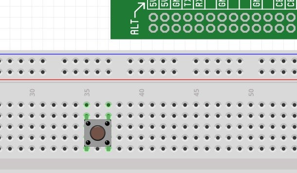
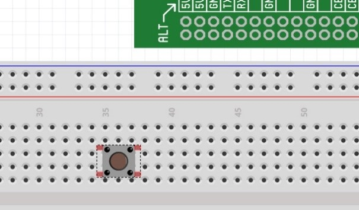

In the previous project, we inserted
a button into the
circuit to act as a physical switch – when pressed, the circuit was
completed
and when left unpressed, the circuit was open.
While using a button in this way is
just fine when there
isn’t much logic behind the button presses (you just want to flip the
circuit
between two states), if you want to do anything more complicated with
the
button, this won’t work. For
example,
perhaps you want to count how many times a button is pressed in a
certain time
period, and take different actions based on that number? Or perhaps you want to
time how long a button
is pressed and take action based on the length of the press? Or maybe a button press
needs to trigger an
action in another circuit that the button isn’t attached to?
To do things more complicated
operations like these, instead
of wiring the button directly into the circuit, instead we can wire the
button
as an input to a GPIO. As
we discussed
earlier, GPIOs can be used as inputs to take information from external
components (like buttons); that input can then be acted upon by the
Raspberry
Pi and appropriate actions can be taken.
GPIO inputs work by reading the
voltage being created by the
circuit at the GPIO pin – either 0V (“low” or “off”) or 3.3V (“high” or
“on”).
For example, a GPIO can be used to
get information from a
button or switch. In
the circuit design we use and will explain below, when a button is left
unpressed, the voltage at the
GPIO pin is
“high” (3.3V); when the button is pressed, the voltage at the GPIO pin
will go
“low” (switch to 0V). The
GPIO will
register the voltage, and the Raspberry Pi can then take action on
either a
pressed or unpressed button.
To wire a button to a GPIO, this is
what the circuit schematic would
look like:
To implement this in an actual breadboard circuit is easy. Here is how to build that circuit on the breadboard and then use code to get input from the button through the GPIO:
Step
#1: Place
button on breadboard.
We start by placing a button on the breadboard. It’s important that the button is oriented correctly – the two independent sides of the button must sit on different connect strips, as follows:


CORRECT
WRONG!!!
2.
Step
#2: Wire one side of the button to a GPIO.
Next, we connect one side of the
button (it doesn’t matter which one, as the internal components of the
button
are symmetrical) to a GPIO. In
this
example, we’ll connect the button to GPIO14.
Step #3:
Wire the other side of the button to
ground.
Finally, we connect the other side of the button to ground. In this example, we are connecting the other side of the button to the blue strip, which is connected to ground.

That’s it for the wiring – pretty simple, right?
Now that the circuit is wired, we can
write the code to get
the GPIO state (low or high):
In this most basic example, we are
reading the GPIO a single
time (the moment the program is run) and we are outputting the state of
the
button at that moment. Try
running the
program a couple times, either holding down or not holding down the
button at
the moment the program is run.
To make the program a little more
interesting (and
convenient!), we can insert a loop so that, instead of just reading the
state
of the GPIO one time, we can continually read and print the state of
the GPIO
for as long as the program is running.
Here’s what that code would look like:
Run this program and then alternate
between pressing and not
pressing the button. Take
a look at the
output window – you should see an indication of when the button is
pressed and
when it is unpressed.